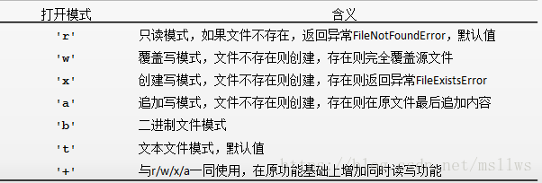
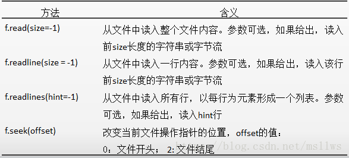
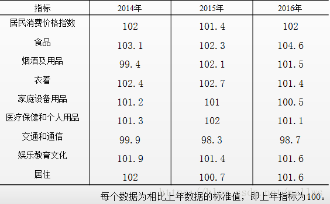
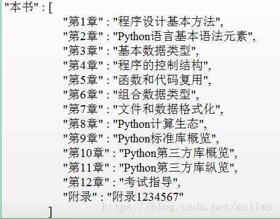
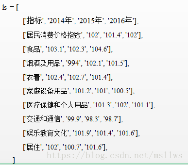
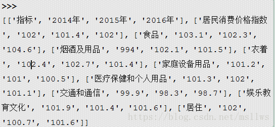
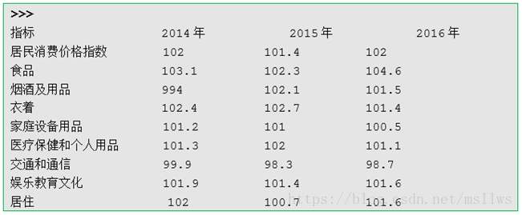

第7章 文件和数据格式化
7.1 文件的使用
文件：数据的集合和抽象，存储在辅助存储器上的一组数据序列，可以包含任何数据内容。
文件类型：文本文件（由单一特定编码的字符组成）、二进制文件（比特0和比特1组成）。
文件的打开和关闭：
使用open()函数打开文件，返回一个操作这个文件的变量，<变量名> = open(<文件路径及文件名>, <打开模式>)
使用close()方法关闭文件，释放文件的使用授权，<变量名>.close()

/#文本文件方式
f = open(“a.txt”,”rt”)
print(f.readline())
f.close()
全国计算机等级考试
/#二进制方式
f = open(“a.txt”,”rb”)
print(f.readline())
f.close()
b’\xc8\xab\xb9\xfa\xbc\xc6\xcb\xe3\xbb\xfa\xb5\xc8\xbc\xb6\xbf\xbc\xca\xd4’
PATH = “D:\“
f = open(PATH + “a.txt”, “rt”)
print(f.readline())
国家计算机等级考试
f.close()
print(f.readline())
Traceback (most recent call last):
File “<pyshell#81>”, line 1, in
print(f.readline())
ValueError: I/O operation on closed file.
文件的读写：

f = open(“D://b.txt”, “r”)
s = f.read() #适用于文件不大 结果是一个字符串
print(s)
新年都未有芳华，二月初惊见草芽。
白雪却嫌春色晚，故穿庭树作飞花。
f.close()
f = open(“D://b.txt”, “r”)
ls = f.readlines() #结果是一个列表
print(ls)
[‘新年都未有芳华，二月初惊见草芽。\n’, ‘白雪却嫌春色晚，故穿庭树作飞花。\n’]
f.close()
f = open(“D://b.txt”, “r”)
s = f.read()
print(s)
新年都未有芳华，二月初惊见草芽。
白雪却嫌春色晚，故穿庭树作飞花。
f.seek(0) # 将读取指针重置到文件开头，否则再次读取为空[]
ls = f.readlines()
print(ls)
[‘新年都未有芳华，二月初惊见草芽。\n’, ‘白雪却嫌春色晚，故穿庭树作飞花。\n’]
f.close()
/#遍历循环逐行遍历文件
f = open(“D://b.txt”, “r”)
for line in f:
print(line)
f.close()
新年都未有芳华，二月初惊见草芽。
白雪却嫌春色晚，故穿庭树作飞花。
f = open(“D://c.txt”, “w”)
f.write(‘新年都未有芳华\n’)
f.write(‘二月初惊见草芽\n’)
f.write(‘白雪却嫌春色晚\n’)
f.write(‘故穿庭树作飞花\n’)
f.close()
ls = [‘新年都未有芳华\n’, ‘二月初惊见草芽\n’,’白雪却嫌春色晚\n’,’故穿庭树作飞花\n’]
f = open(“D://c.txt”, “w”)
f.writelines(ls)
f.close()
7.2 数据组织的维度
数据组织：一维数据、二维数据和高维数据。
一维数据：由对等关系的有序或无序数据构成，采用线性方式组织。例如：北京、上海、天津、重庆。
二维数据：也称表格数据，由关联关系数据构成，采用二维表格方式组织。例如：国家统计局发布的居民消费价格指数。

高维数据：由键值对类型的数据构成，采用对象方式组织，可以多层嵌套。衍生出HTML、XML、JSON等具体数据组织的语法结构。

7.3 一维数据的处理
一维数据的表示：
ls = [‘北京’, ‘上海’, ‘天津’, ‘重庆’]
print(ls)
[‘北京’, ‘上海’, ‘天津’, ‘重庆’]
一维数据的存储：空格分隔、逗号分隔（CSV存储格式）、换行分隔、其他特殊符号分隔（例如分号）。
列表对象输出为CSV格式文件：
ls = [‘北京’, ‘上海’, ‘天津’, ‘重庆’]
f = open(“city.csv”, “w”)
f.write(“,”.join(ls)+ “\n”)
f.close()
北京,上海,天津,重庆
一维数据的处理：从CSV文件读入一维数据，将其表示为列表对象
f = open(“city.csv”, “r”)
ls = f.read().strip(‘\n’).split(“,”)
f.close()
print(ls)
[‘北京’, ‘上海’, ‘天津’, ‘重庆’]
7.4 二维数据的处理
二维数据的表示：

二维数据的存储：由一维数据组成，用CSV格式文件存储。每一行是一维数据，整个CSV文件是一个二维数据
/# ls代表二维列表，此处省略
f = open(“cpi.csv”, “w”)
for row in ls:
f.write(“,”.join(row)+ “\n”)
f.close()
二维数据的处理：从CSV文件读入二维数据，并将其表示为二维列表对象
f = open(“cpi.csv”, “r”)
ls = []
for line in f:
ls.append(line.strip(‘\n’).split(“,”))
f.close()
print(ls)

二维列表一般需要借助循环遍历实现对每个数据的处理：
/#对二维数据进行格式化输出，打印成表格形状
for row in ls:
line = “”
for item in row:
line += “{:10}\t”.format(item)
print(line)
